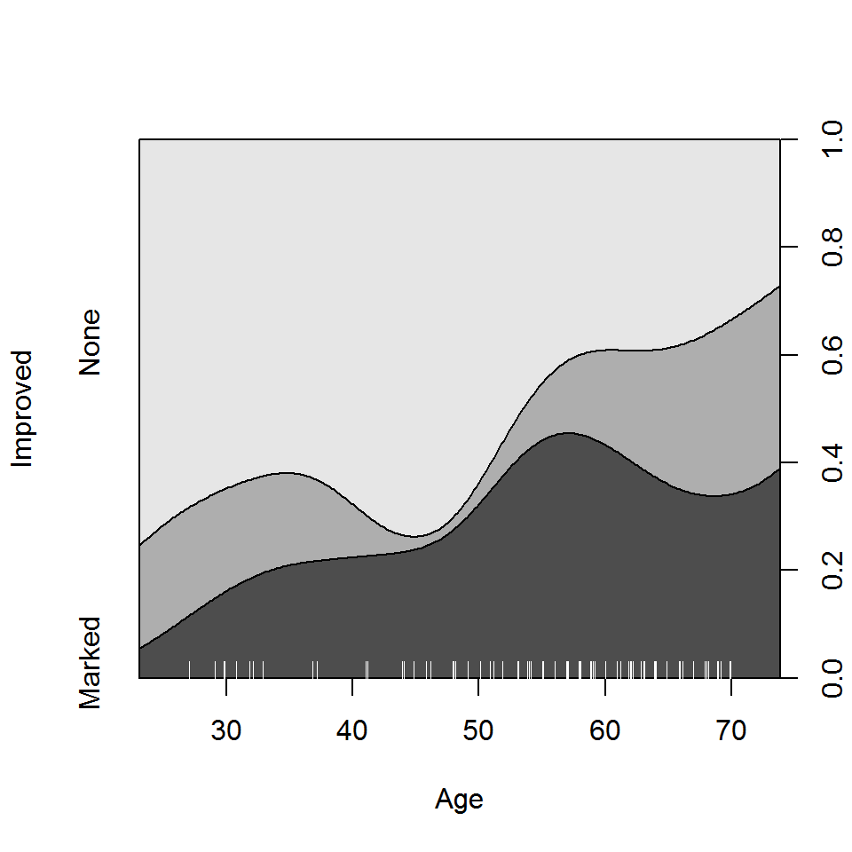

When continuous predictors are available—and potentially important—in
explaining a categorical outcome, models for that outcome include:
logistic regression (binary response), the proportional odds model
(ordered polytomous response), multinomial (generalized) logistic
regression. Many of these are special cases of the generalized linear
model using the "poisson" or "binomial" family
and their relatives.
Spine and conditional density plots
I don’t go into fitting such models here, but I would be remiss not
to illustrate some visualizations in vcd that are helpful
here. The first of these is the spine plot or spinogram (Hummel, 1996), produced with
spine(). These are special cases of mosaic plots with
specific spacing and shading to show how a categorical response varies
with a continuous or categorical predictor.
They are also a generalization of stacked bar plots where not the
heights but the widths of the bars corresponds to the relative
frequencies of x. The heights of the bars then correspond
to the conditional relative frequencies of y in every
x group.
Example: For the Arthritis
data, we can see how Improved varies with Age
as follows. spine() takes a formula of the form
y ~ x with a single dependent factor and a single
explanatory variable x (a numeric variable or a factor).
The range of a numeric variablex is divided into intervals
based on the breaks argument, and stacked bars are drawn to
show the distribution of y as x varies. As
shown below, the discrete table that is visualized is returned by the
function.
(spine(Improved ~ Age, data = Arthritis, breaks = 3))
## Improved
## Age None Some Marked
## [20,40] 10 3 2
## (40,60] 21 3 17
## (60,80] 11 8 9
(spine(Improved ~ Age, data = Arthritis, breaks = "Scott"))
## Improved
## Age None Some Marked
## [20,30] 6 1 0
## (30,40] 4 2 2
## (40,50] 9 0 3
## (50,60] 12 3 14
## (60,70] 11 8 8
## (70,80] 0 0 1
Spine plots for the Arthritis data
The conditional density plot (Hofmann &
Theus, 2005) is a further generalization. This visualization
technique is similar to spinograms, but uses a smoothing approach rather
than discretizing the explanatory variable. As well, it uses the
original x axis and not a distorted one.
cdplot(Improved ~ Age, data = Arthritis)
Conditional density plot for the Arthritis data showing the
variation of Improved with Age.
In such plots, it is useful to also see the distribution of the
observations across the horizontal axis, e.g., with a rug()
plot. @ref{fig:cd-plot} uses cdplot() from the
graphics package rather than cd_plot() from
vcd, and is produced with

From this figure it can be easily seen that the proportion of patients reporting Some or Marked improvement increases with Age, but there are some peculiar bumps in the distribution. These may be real or artifactual, but they would be hard to see with most other visualization methods. When we switch from non-parametric data exploration to parametric statistical models, such effects are easily missed.
Model-based plots: effect plots and ggplot2 plots
The nonparametric conditional density plot uses smoothing methods to convey the distributions of the response variable, but displays that are simpler to interpret can often be obtained by plotting the predicted response from a parametric model.
For complex glm() models with interaction effects, the
effects package provides the most useful displays, plotting
the predicted values for a given term, averaging over other predictors
not included in that term. I don’t illustrate this here, but see Fox & Weisberg (2018),Fox (2003) and
help(package="effects").
Here I just briefly illustrate the capabilities of the
ggplot2 package for model-smoothed plots of categorical
responses in glm() models.
Example: The Donner data frame
in vcdExtra gives details on the survival of 90 members of
the Donner party, a group of people who attempted to migrate to
California in 1846. They were trapped by an early blizzard on the
eastern side of the Sierra Nevada mountains, and before they could be
rescued, nearly half of the party had died. What factors affected who
lived and who died?
data(Donner, package="vcdExtra")
str(Donner)
## 'data.frame': 90 obs. of 5 variables:
## $ family : Factor w/ 10 levels "Breen","Donner",..: 9 1 1 1 1 1 1 1 1 1 ...
## $ age : int 23 13 1 5 14 40 51 9 3 8 ...
## $ sex : Factor w/ 2 levels "Female","Male": 2 2 1 2 2 1 2 2 2 2 ...
## $ survived: int 0 1 1 1 1 1 1 1 1 1 ...
## $ death : POSIXct, format: "1846-12-29" NA ...A potential model of interest is the logistic regression model for
\(Pr(survived)\), allowing separate
fits for males and females as a function of age. The key to
this is the stat_smooth() function, using
method = "glm", method.args = list(family = binomial). The
formula = y ~ x specifies a linear fit on the logit scale
(@ref{fig:donner3}, left)
# separate linear fits on age for M/F
ggplot(Donner, aes(age, survived, color = sex)) +
geom_point(position = position_jitter(height = 0.02, width = 0)) +
stat_smooth(method = "glm",
method.args = list(family = binomial),
formula = y ~ x,
alpha = 0.2, size=2, aes(fill = sex))Alternatively, we can allow a quadratic relation with
age by specifying formula = y ~ poly(x,2) (,
right).
# separate quadratics
ggplot(Donner, aes(age, survived, color = sex)) +
geom_point(position = position_jitter(height = 0.02, width = 0)) +
stat_smooth(method = "glm",
method.args = list(family = binomial),
formula = y ~ poly(x,2),
alpha = 0.2, size=2, aes(fill = sex))
Logistic regression plots for the Donner data showing
survival vs. age, by sex. Left: linear logistic model; right: quadratic
model {#fig:donner3}
These plots very nicely show (a) the fitted \(Pr(survived)\) for males and females; (b) confidence bands around the smoothed model fits and (c) the individual observations by jittered points at 0 and 1 for those who died and survived, respectively.